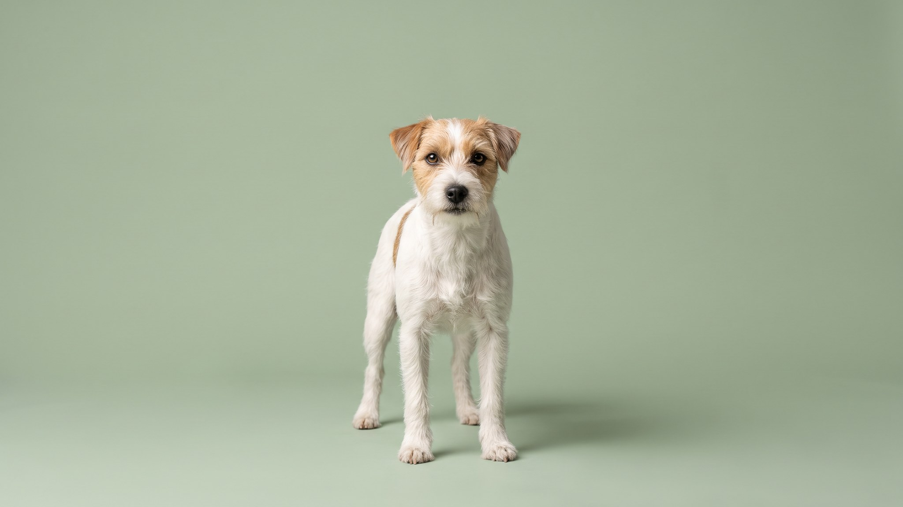

Парсон-рассел-терьер выглядит компактно, но это обманчивое впечатление. Порода выведена для охоты в норах на лис, и рабочий драйв никуда не делся. Если хотите тихого диванного пса, парсон-рассел-терьер не ваш выбор. Если готовы к двум часам активной прогулки в день и хотите умного, стремительного партнёра, вот что нужно знать до того, как взять щенка.
🐾 Ваш питомец — парсон-рассел-терьер?
Заведите профиль в AnimaLife: приложение запомнит породу, возраст и вес и будет подсказывать по уходу именно для неё. Вопросы AI-ветеринару — круглосуточно и бесплатно.
Завести профиль → Завести в MAX →
У вас iPhone? AnimaLife есть в App Store
Путаница возникает потому, что обе породы восходят к одному корню: терьерам преподобного Джона Рассела. Парсон-рассел-терьер выше на ногах, длина корпуса примерно равна высоте в холке (квадратный формат), а грудная клетка достаточно узкая, чтобы пролезть в нору. Джек-рассел-терьер приземистее, корпус у него удлинённый.
Парсон признан FCI и KC как самостоятельная порода с 1990 года. Он задуман для полевой охоты рядом с всадниками: достаточно длинных ног, чтобы поспевать за лошадьми, и достаточно смелости, чтобы лезть в нору к лисе.
Парсон-рассел-терьер азартный, быстрый и самостоятельный. Он не злобный, но принимает решения сам. Если на прогулке учуял запах, уйдёт за ним, не оглянувшись. Несколько вещей, с которыми сталкиваются все владельцы:
Это рабочие качества, а не дефекты. Порода такой и создавалась.
Минимум для парсон-рассел-терьера: две активные прогулки в день по 45–60 минут каждая, с бегом или игрой на площадке. Простые прогулки на поводке не закрывают потребность: нужна физическая и умственная работа. Ноузворк, аджилити, апортировка хорошо разряжают его энергию.
Квартира подходит, если режим соблюдается. Уставший парсон в квартире лежит спокойно, а нереализованный ищет приключений: грызёт, лает, носится по дивану. Дом с садом удобнее, но забор должен быть надёжным: терьеры подкапываются.
Порода честно требовательна. Лучше отказаться от неё, если:
Парсон-рассел-терьер отлично подходит активным людям, спортсменам, семьям с детьми школьного возраста. Он крепкий, весёлый и преданный при достаточной нагрузке и структуре.
Шерсть парсон-рассел-терьера бывает гладкой и жёсткой (проволочной). Гладкая требует лишь еженедельного расчёсывания щёткой. Жёсткая требует стриппинга раз в полгода: выщипывания отмершей ости, иначе шерсть теряет структуру и цвет.
🐾 У вас парсон-рассел-терьер?
AnimaLife соберёт уход под породу: к каким болезням есть склонность, что проверять по возрасту, чем кормить и когда пора к врачу. Бесплатно, прямо в мессенджере.
Собрать план ухода → Собрать в MAX →
У вас iPhone? AnimaLife есть в App Store
🐾 Понравился разбор?
Подпишитесь на канал — каждый день разбираем по одному тревожному симптому у кошек и собак: что в пределах нормы, а когда пора к врачу. Подпишитесь, чтобы не пропустить разбор, который может спасти здоровье вашего питомца.
Материал носит информационный характер и не заменяет очную консультацию ветеринара.